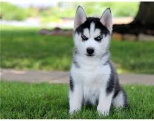
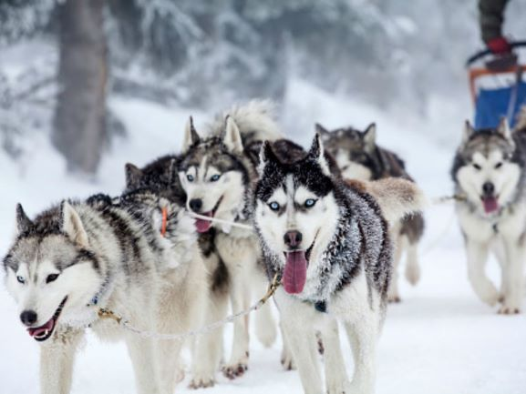

While I am a lover of many animals, there is one species and breed that has always stood out to me and that is the siberian husky. Majestic, playful, energetic, loyal, the siberian husky is a beautiful and gallant animal that is both aestically and behaviorly pleasing to interact with. The Siberian husky has many great qualities such as below.
While they have many positive qualities, they are not easy to raise due their stubborn nature and hierarchical needs. If a novice dog owner/trainer wants to own or train one, they will need to consider the following.
All these things need to be taken into account if you are going to adopt or train a siberian husky. The dog is not for everyone but if you are looking for a loyal, playful, intelligent companion, then you will will not be dissapointed with the choice to adopt one.
While both the United States and Russia like to take claim for breeding this dog, it was actually bred by the Chukchi tribe in northeast Asia over 300 years ago. They were bred to help with sledding specifically and that has also transitioned into today as of their many functions. Their endurance prowess was first noted during the Alaskan Gold Rush when various breeds of dogs were set up to race as amusement and the Chukchis dogs proved to be both fast and have a great deal of stamina despite their relatively small size. Their sleding ability has also been captured on film. The movie "Balto" showcases the resilience and stamina of the siberian husky breed. Today siberian huskies serve as beloved family pets but also partake in sledding and various other physical activites all across the world.
